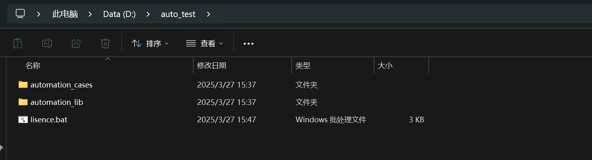
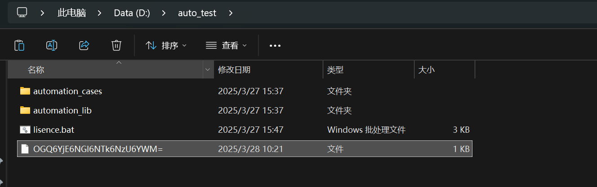
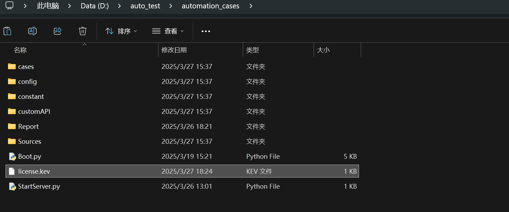
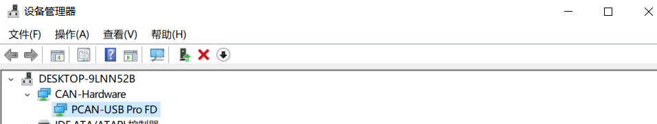
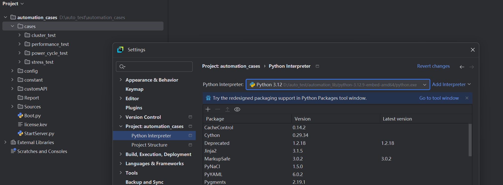
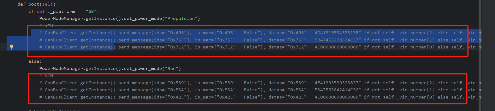

1. 下载自动化解决方案软件包
2. 解压到指定目录
- 在D盘或E盘根目录下创建一个文件夹: auto_test (此目录今后将作为自动化测试的根目录)
- 将下载好的软件压缩包文件解压到刚刚创建好的 auto_test 文件夹内
- 进入 auto_test, 检查文件内容, 文件夹: automation_cases, 文件夹: automation_lib, 文件: lisence.bat

3. 配置python/adb环境变量 & 生成注册编号
- 双击lisence.bat文件，至执行完成
- 确认当前目录下有新的注册编号文件生成

- 可在Windows cmd窗口中使用
where python , where pip, where adb 这3条指令确认python,pip,adb已经正确加入环境变量
4. 申请证书文件
- 将 #3 中生成的注册编号文件发送给VCU软件测试团队License管理员 @Li Zhao, @Cheng Jie 生成证书文件license.key
5. 将证书文件放置到正确位置
- 将生成的证书文件license.key放置在 D:\auto_test\automation_cases\ 目录下

6. 安装Git，配置环境变量 (若曾经完成，跳过)
-
下载Git并安装
- 假如安装在D:\application\Git\目录下，将 D:\application\Git\bin 加入系统环境变量
7. PC连接好PCAN硬件， 配置驱动
- 将PCAN硬件一端连接PC，另一端连接VCU侧ICAN
- 安装PCAN硬件的驱动软件包，在设备管理器中确认PCAN设备驱动正常

8. 在PyCharm中打开automation_cases工程文件夹，配置python解释器路径
- 在PyCharm中选择 automation_cases 文件夹并打开
- 在PyCharm中 File > Settings > Python Intepreter 中设置已存在的解释器路径: D:\auto_test\automation_lib\python-3.12.9-embed-amd64\python.exe

9. PC电脑连接网络
10. 配置Config.json配置文件中关于台架VCU车型参数
- 打开 automation_cases/config/Config.json 配置文件，正确设置与当前台架匹配的 BENCH_INFO, PROJECT, MODEL_YEAR, VEHICLE_PROPULSION_TYPE 必要配置的属性值
"BENCH_INFO": "CLEA-15",
"PROJECT": "L232",
"MODEL_YEAR": "MY25",
"VEHICLE_PROPULSION_TYPE": "BEV",
11. 启动车机
- 选择 automation_cases/StartServer.py 运行，启动can总线相关的服务
- 将 automation_cases/Boot.py 代码中总线VIN相关的行的代码注释掉，然后运行该脚本，VCU会被唤醒起来，数秒后屏幕会被点亮，且最终PowerMode=Run/Propulsion (如需要使用到总线VIN，需要将此处N配置为实际的VIN值，否则会Theft Lock)

- 完成以上所有步骤后，可满足最基本的让台架持续处于正常运行状态的需求
12. Power cycle test
- 打开 automation_cases/config/Config.json 配置文件，正确设置与当前台架匹配的 BASE_TEST_DISK, SERIAL_PORT 必要配置的值
"BASE_TEST_DISK": "D",
"SERIAL_PORT": "COM6",
打开 automation_cases/cases/power_cycle_test/00PowerCycle.py文件，文件头部有许多需要配置的参数: STR_ENABLE, PULLBACK, STRESS_TEST,NIGHT_WAKEUP_STR, SAMPLE_TYPE,SERIAL_LOG
# Configurable
STR_ENABLE = True
PULLBACK = False
STRESS_TEST = {"CanStressTest": True, "MonkeyTest": True, "NaviSimulation": False, "ClusterMediaSwitch": True, "ClusterViewSwitch": False, "ClusterViewSwitch_byLIN": False, "Enable360": False}
NIGHT_WAKEUP_TIMES = 0
NIGHT_WAKEUP_STR = False
SAMPLE_TYPE = "C"
# Log Obtain
SERIAL_LOG = False # code is in charge of recording serial log, avoid using putty to take up serial port
...
请根据PowerCycle测试文档熟悉各配置项的含义，正确完成配置
上述配置完成后，选择 automation_cases/cases/power_cycle_test/00PowerCycle.py 文件并运行，可开启 str/cold 循环测试
13. Stress test
- 开始连续24h/48h/72h压测前，也需要在 automation_cases/cases/stress_test/SystemPressureRunner.py 脚本文件内配置参数
- 选择 automation_cases/cases/stress_test/SystemPressureRunner.py 运行，开启系统压测